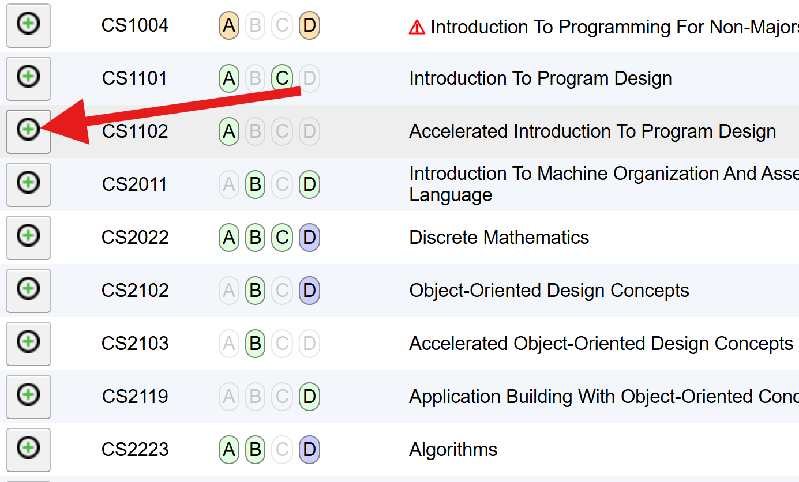
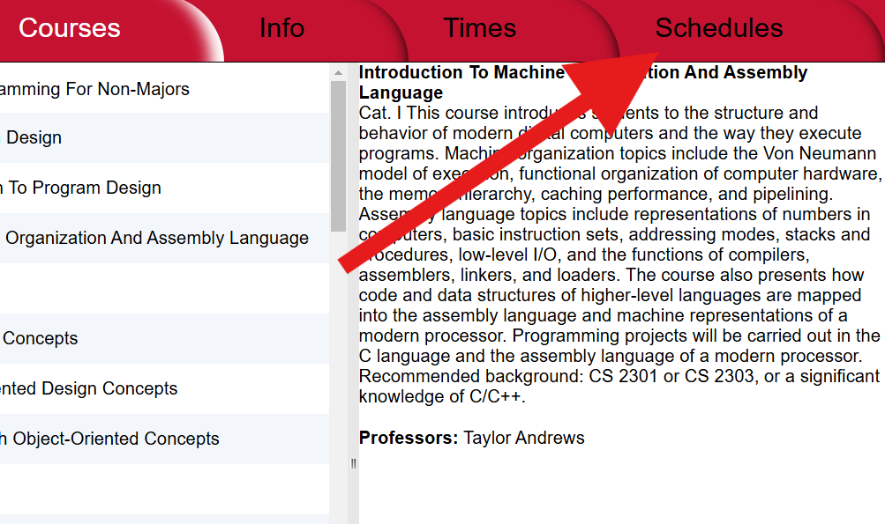
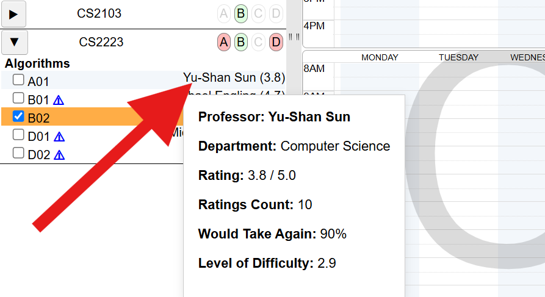
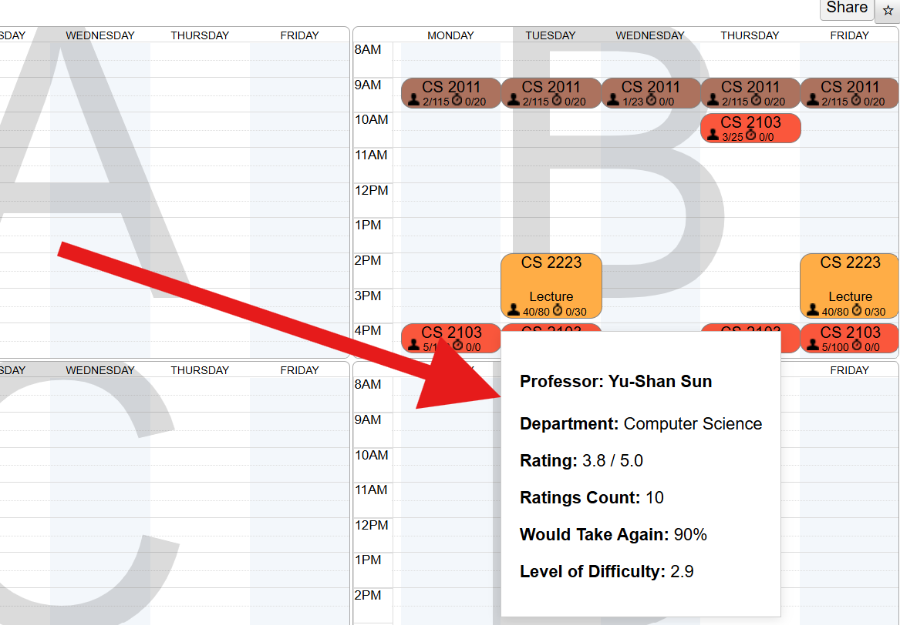

Once you have Rate My Planner installed, just head over to the WPI Planner website at https://planner.wpi.edu/.
2. Add Courses You Want to Take

Navigate to your subject of choice, then add course you are interested in taking by pressing the green + button.
3. Go to Schedules

go arrow lol
4. Select A Section and See their Stats

Once in schedules you can expand a class to see which professors are offering that class. You can see their average Rate My Professor rating next to their name, or you can hover over their name to get get more complete Rate My Professor data on the professor
5. Or... Hover On a Class

Alternately, you can hover over the course on right in the calendar section to view a professors rating.